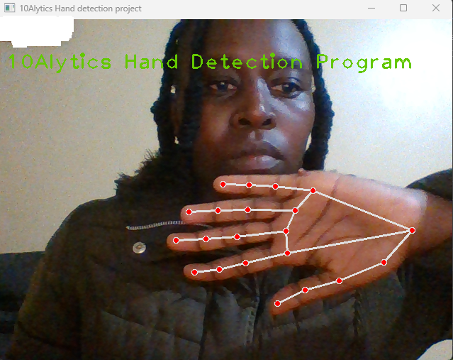
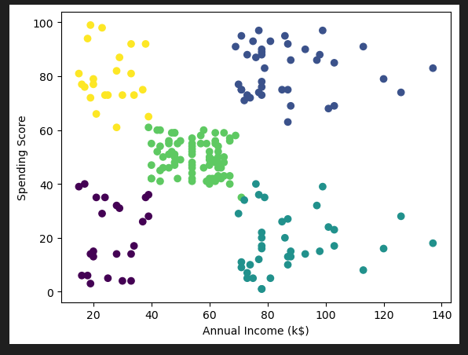

Hand Detection
MediaPipe Hand Landmarker model is a ML Model that lets you detect the landmarks of the hand in an image.
To find out more on Hand Detection Click Here
MediaPipe Hand Landmarker model is a ML Model that lets you detect the landmarks of the hand in an image.
To find out more on Hand Detection Click Here
MediaPipe is a ML Model that identifies and classifies real-time pose estimation of human body parts and joints of images and videos.
For further details on Pose Detection Click Here
OpenCV is a ML Model used in Face, Eyes, and Smile Detection.
For further details on Face, Eyes, and Smile Detection Click Here

Peterside Hospital is a private hospital located in Lagos, Nigeria. It was founded in 2000 by Dr. Efemena Ikpro, a renowned Nigerian physician. The hospital provides a wide range of medical services, including general medicine, surgery, paediatrics, obstetrics and gynaecology, cardiology, neurology, and oncology. Peterside Hospital is known for its state-of-the-art facilities, modern equipment, and highly skilled medical professionals. The hospital has a team of over 300 medical personnel, including doctors, nurses, and other healthcare professionals, who are trained locally and internationally. The hospital has several specialized clinics, including a diabetes clinic, a fertility clinic, a heart clinic, and a cancer clinic. It also offers services such as health check-ups, laboratory tests, and imaging services.
To build a machine-learning model that can predict the likelihood of a person having a heart disease based on the given features.
The features include:
For further Peterside Hospital Heart Disease Prediction insights Click Here.
K-Means clustering is an unsupervised learning technique that is suitable for working with unlabelled data that lacks predefined categories or groups. The primary objective of this segment is to group similar data points together, with the number of groups determined by the value of K. The algorithm follows an iterative approach and assigns each data point to one of the K groups based on the features that are provided.
Selore Nigeria is a popular electronics retail chain in Nigeria that specializes in the sale of mobile phones, tablets, laptops, and other related accessories. The company was founded in 2022 and has since grown to become one of the largest retailers of mobile phones and related products in the country. Selore Nigeria offers a wide range of mobile phones from top brands such as Samsung, Apple, Nokia, and Huawei, among others. The company is also known for its after- sales support, including repairs and maintenance services, as well as trade-in options for old devices. With its numerous outlets nationwide, Selore Nigeria is a go-to destination for many Nigerians seeking to purchase mobile phones and related accessories.
A retail company wants to understand the spending behaviour of its customers to target them with personalized marketing campaigns. They have collected data on customer demographics (age, gender) and spending habits (annual income, spending score) and want to segment their customers based on their spending behaviour. The objective of this project is to build a customer segmentation model to help the retail company in developing targeted marketing strategies.
The goal of this project is to segment customers based on their purchasing behaviour and demographic information. We will use unsupervised learning techniques to identify groups of customers with similar behaviour and characteristics. This information can be used to develop targeted marketing campaigns, personalize product recommendations, and optimize pricing strategies.
The retail company has collected data on 200 customers containing:
For further Selore Customer Segmentation insights Click Here.
EDA consists of Data Cleaning (Feature Engineering, identifying and dealing with missing data) Univariate, Bivariate, and Multivariate Analysis, and obtaining insights.
The dataset consists of the following parameters:
For further Dunes EDA insights, Click Here.
Soran Automobiles is an automobile company that specializes in providing high-quality vehicles to customers worldwide. With a focus on innovation and customer satisfaction, Soran Automobiles has become a leading brand in the industry. At Soran Automobiles, we understand the importance of a reliable and efficient vehicle, which is why we offer a wide range of cars with different specifications to meet the needs of our diverse customer base. Our cars are equipped with advanced technology and safety features to ensure a comfortable and secure driving experience.
The company director is seeking to gain valuable insights that can help:
The Director believes that that the analysis will help them make data-driven decisions and take business to the next level. EDA consists of Feature Engineering, identifying and dealing with missing data, and eliminating duplicates. The dataset consists of the following parameters:
For further Soran Automobiles Analysis, Click Here.
DulaChains Solution is a leading global retail supply chain business revolutionizing how products are sourced and delivered worldwide. With our unwavering commitment to excellence, innovation, and sustainability, we provide end-to-end supply chain solutions that empower retailers, manufacturers, and suppliers to thrive in an ever- evolving marketplace. Our global reach spans across continents, connecting diverse markets and bridging the gap between suppliers and retailers. We leverage our extensive network to source the highest quality products, and deliver them to our clients' doorsteps in a timely manner. We take care of the entire supply chain process, allowing our clients to focus on their core business objectives.
I recently conducted a Supply Chain Analysis using Tableau, and I am excited to share my findings.
The executive team wanted a dashboard that provides a comprehensive overview of the company's profits while incorporating forecasts for the coming months. The dashboard will help the executive team to make data-driven decisions and devise effective strategies to implement process improvements and proactively address potential issues before they impact the company's performance.
DulaChain seeks to leverage on their data resources to uncover patterns and trends of their supply chain operations by:STERLING E-COMMERCE DASHBOARD with Microsoft Excel
I recently conducted a Sales Analysis using Excel, and I am excited to share my findings.